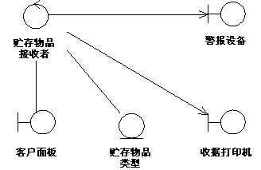

| 指南：用例实现 |
 |
|
简介用例实现代表一个用例在协作对象方面将如何实施。 此工件可以有各种形式。例如，它可以包含文本描述（文档）、参与类和子系统的类图以及说明类和子系统实例之间交互流程的交互图（通信图和时序图）。 在一个模型中，用例实现表示为一个 UML 协作，该协作将形成用例实现一部分的这些图和附加信息（例如文本描述）分组。 将用例实现与其用例分开的原因是，这样做允许用例与它们的实现分开管理。这对于较大的项目或成系列的系统尤其重要，其中相同的用例在产品系列内的不同产品中的设计可以不同。请考虑一个电话交换机系列的情况，它们有许多公共的用例，但是又根据产品定位、性能和价格对它们进行不同的设计和实施。 对于较大的项目，将用例与其实现分开允许对用例的设计进行更改，而不影响作为基线的用例本身。 对于用例模型中的每个用例，分析／设计模型中都有一个与该用例有实现关系的用例实现。在 UML 中，这显示为一个虚线箭头，箭头象征泛化关系，表示实现是一种继承以及一种依赖关系（即，它可能已显示为使用 <<realization>> 构造的依赖关系）。
分析／设计模型中的用例实现可以跟踪到用例模型中的用例。 用例实现拥有的类图对于每个用例实现，可能有描绘其参与类的一个或多个类图。 下图显示了接收抵押商品用例的实现的类图。一个类及其对象经常参与若干用例实现。在设计期间重要的是，协调对一个类的所有需求，及它的可能由不同用例实现所拥有的对象。  用例“接收抵押商品”及其类图。 通信和用例实现拥有的时序图对于每个用例实现，有描绘其参与对象及其交互的一个或多个交互图。有两种类型的交互图：时序图和通信图。它们表达类似的信息，却以不同的方式显示。时序图显示消息的明确顺序，更适用于直观化消息的时间排序很重要的情况，而通信图显示对象之间的通信链接，更适用于理解对给定对象的所有影响和进行算法设计的情况。关于更多信息，请参阅下面的技术：时序图和技术：通信图。 |
© Copyright IBM Corp. 1987, 2006. All Rights Reserved. |